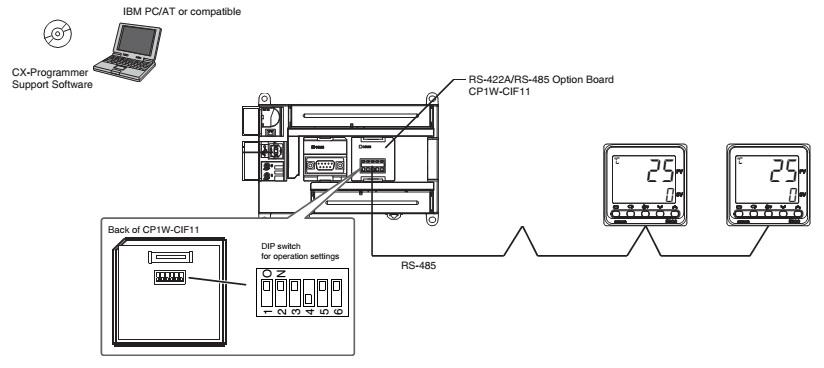
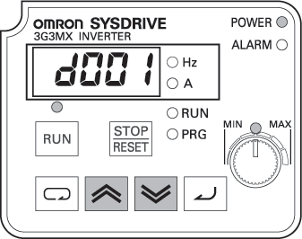
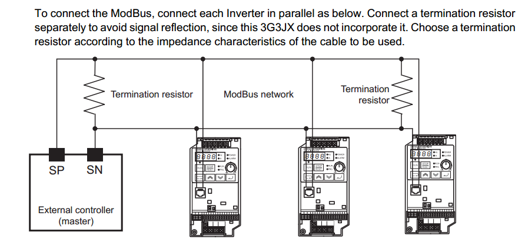
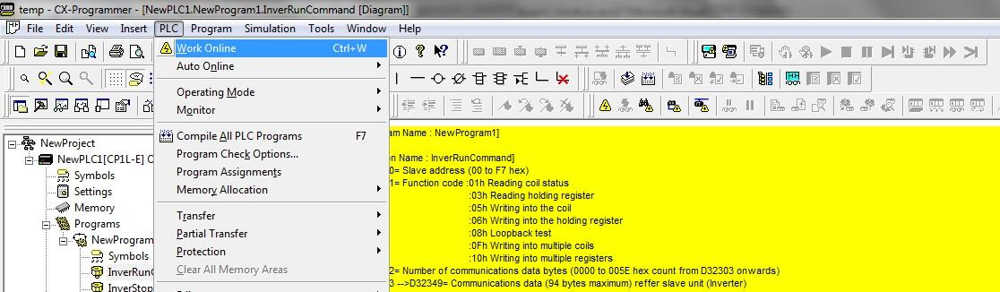

Omron CP1L → Modbus → Inverter
บทนี้พา CP1L ทำหน้าที่เป็น Modbus RTU Master สั่งงาน Omron Inverter รุ่น 3G3JX หรือ 3G3MX (และ MX2 รุ่นใหม่กว่า) — Set ความเร็วมอเตอร์, สั่ง Start/Stop, อ่านกระแสที่กิน, กลับทิศ ฯลฯ

อุปกรณ์ที่ใช้
| อุปกรณ์ | หน้าที่ | สถานะ 2026 |
|---|---|---|
Omron CP1L-EM30DT-D | Master | ปัจจุบัน |
Omron 3G3JX-A4007 | Inverter 0.75kW 380V | Legacy — มี MX2 มาแทน |
Omron 3G3MX2-A2007 | Inverter 0.75kW 220V | ปัจจุบัน |
CP1W-CIF11 | RS-485 Option Board สำหรับ CP1L | ปัจจุบัน |
| 3-phase motor | โหลด | — |
หน้าตา Inverter Omron

d001 (Output frequency monitor), LED Power/Alarm, Run/Stop-Reset/PRG mode, Run/Stop indicators, ปุ่ม Up/Down/Enter + Volume knob (MIN-MAX) สำหรับตั้งค่าด้วยมือฮาร์ดแวร์: RS-485 Wiring
CP1L ไม่มี RS-485 ในตัว ต้องใส่ Option Board CP1W-CIF11 ก่อน:
- ติดตั้ง CIF11 ปิดไฟ → ถอดฝาด้านซ้ายของ CP1L ออก → เสียบ CIF11 ลง slot → ปิดฝา → CIF11 จะมีขั้ว A+/B-/SG ออกมาให้
-
Wire RS-485
ต่อสาย 3 เส้นระหว่าง CP1L (CIF11) → 3G3MX2:
A+(CIF11) ↔SP+หรือ485+(Inverter)B-(CIF11) ↔SN-หรือ485-(Inverter)SG(CIF11) ↔LหรือSG(Inverter common)
- Terminating Resistor ปลายสาย daisy-chain ใส่ตัวต้านทาน 120 Ω คร่อม A กับ B (Omron CIF11 มี jumper เลือก On/Off ในตัว)

ตั้งค่า Inverter เป็น Modbus Slave
ที่หน้าจอ Inverter (เช่น 3G3MX2):
| Function | ตั้งเป็น | ความหมาย |
|---|---|---|
A001 | 03 | Frequency source = Modbus |
A002 | 03 | Run command source = Modbus |
C071 | 05 | Baud rate = 9600 bps |
C072 | 1 | Slave Station = 1 |
C074 | 0 | Parity = None |
C075 | 1 | Stop bit = 1 |
C076 | 2 | Communication error mode = Trip |
C078 | 1 | Comm wait time = 10 ms |
กดปุ่ม FUNC → เลื่อนหา function → กด SET → ใส่ค่า → STR เพื่อ Save
Register Map ของ Inverter Omron MX2
Register ที่ใช้บ่อย (Hex address):
| Register | หน้าที่ | Function Code | หมายเหตุ |
|---|---|---|---|
0001H | Run / Stop Command | 06 Write | 1 = Run, 0 = Stop |
0002H | Direction | 06 Write | 0 = Forward, 1 = Reverse |
0004H | Frequency Setting | 06 Write | หน่วย × 100 (เช่น 5000 = 50.00 Hz) |
1001H | Output Frequency Monitor | 03 Read | หน่วย × 100 |
1002H | Output Current Monitor | 03 Read | หน่วย × 10 (เช่น 25 = 2.5 A) |
1003H | Output Direction | 03 Read | 0=Stop, 1=FWD, 2=REV |
1004H | Output Voltage Monitor | 03 Read | หน่วย × 10 (V) |
1005H | Output Power Monitor | 03 Read | หน่วย × 100 (kW) |
📡 ลองสร้าง Modbus Frame เอง
ลองสร้าง frame ที่ CP1L จะส่งออกสาย RS-485 ดู — เลือก Slave, FC, Address, ค่า → ดู byte-by-byte พร้อม CRC-16:
Modbus Function Codes — Quick Reference

CX-Programmer Code — Modbus Master บน CP1L
CP1L รองรับ Modbus RTU Master ผ่าน Easy Modbus-RTU Master — ไม่ต้องเขียน frame เอง เพียงตั้งค่าใน D-register แล้ว Set A640.00 (Port 2) เพื่อ trigger:

D32300–D32306 เก็บ command frame — Slave Address, Function Code, Number of Comm Data Bytes, Modbus Register, Number of RegistersRead Frequency — อ่าน register 1001H

; เซ็ต command frame ตอน Power-up
LD P_On ; Always ON flag
MOV #0001 D32300 ; Slave 1
MOV #0003 D32301 ; Function Code 03 (Read)
MOV #0004 D32302 ; Number of bytes = 4
MOV #1001 D32303 ; Modbus Register = 1001H (Output Freq)
MOV #0001 D32304 ; Number of regs = 1
; Trigger ทุก 1 วินาที
LD P_1s ; 1.0s clock
OUT W10.00 ; RUN_command bit
LD W10.00
OUT A640.00 ; Modbus-RTU Master Execution Bit (Port 2)
; เช็ค error
LD A640.01
OUT W1.00 ; Normal operation
LD A640.02
OUT W1.01 ; Error
A640.00 = Execution (Port 2), A641.00 = Execution (Port 1) — turn ON เพื่อสั่งส่ง command, OFF เมื่อเสร็จ/errorWrite Frequency — เขียน 30.00 Hz
; เปลี่ยน command เป็น Write Single Register
LD W2.00 ; Trigger จาก HMI/Button
MOV #0001 D32300 ; Slave 1
MOV #0006 D32301 ; Function Code 06 (Write Single)
MOV #0004 D32302 ; Number of bytes = 4
MOV #0004 D32303 ; Register = 0004H (Frequency Set)
MOV #3000 D32304 ; Value = 30.00 (× 100)
LD W2.00
OUT A640.00 ; Trigger MasterRun / Stop
; Run Forward — เขียน 1 ที่ register 0001H
LD 0.00 ; ปุ่ม Start
MOV #0001 D32300
MOV #0006 D32301
MOV #0004 D32302
MOV #0001 D32303 ; Reg 0001H
MOV #0001 D32304 ; 1 = Run
OUT A640.00
; Stop — เขียน 0 ที่ 0001H
LD 0.01 ; ปุ่ม Stop
MOV #0000 D32304
OUT A640.00Sequence การทำงานจริง
- Power Up ทั้ง CP1L และ Inverter — รอ Inverter Boot ~5 วินาที (จอแสดง "0.00" หรือคำเตือน)
-
เซ็ต Frequency เริ่มต้น
ใช้ HMI/CX-Programmer Set
D32303 = 0004H, D32304 = 2500→ 25 Hz -
กด Start
CP1L ส่ง
FC 06เขียน 1 ที่0001H→ Inverter เริ่มขับมอเตอร์ความถี่เพิ่มขึ้นช้า ๆ (Acceleration ramp) -
อ่านค่าจริง
ทุก 1 วินาที PLC poll
1001H, 1002H, 1004H, 1005H→ เก็บใน D-register → แสดงบน HMI หรือ SCADA -
เปลี่ยนความเร็ว
เขียน register
0004Hค่าใหม่ → Inverter จะ ramp ความถี่ตาม -
หยุด
เขียน 0 ที่
0001H→ Inverter ทำ Deceleration ramp → หยุดที่ 0 Hz
Trouble-Shooting
| อาการ | สาเหตุที่พบบ่อย |
|---|---|
| A640.02 ON ตลอด (Error) | Baud rate / Parity / Stop bit ไม่ตรง · สลับ A กับ B |
| กด Start แต่ Inverter ไม่ทำงาน | A002 ≠ 03 (Run command ยังเป็น Terminal/Keypad) |
| ตั้ง Freq แล้วไม่เปลี่ยน | A001 ≠ 03 (Freq source ยังเป็น Keypad/Analog) |
| Comm สำเร็จแต่ค่าผิด | ลืมว่า value × 100 (ตั้ง 50.00 Hz = ค่า 5000) |
| กลับมาทำงานแล้ว Comm หาย | ลืมใส่ Terminating Resistor 120Ω ที่ปลายสาย |
Modbus TCP — ใช้ Ethernet แทน RS-485
CP1L-E (รุ่น มี E) มี Ethernet ในตัว — สื่อสาร Modbus TCP กับ Slave ที่รองรับได้ด้วย
Function block SocSend / SocRcv หรือใช้ตัวช่วย FINS over UDP:

TCP = เร็ว (100Mbps) / ใช้ Switch ขยายเป็น Star topology / แต่ต้องใช้ Cat-5e/6 → เหมาะกับ HMI, SCADA, ระบบใหญ่
ภาพรวม Sequence ทั้งระบบ
CP1L-EM30DT-D — Master
Modbus RTU (Port 2 / RS-485) · FC 03 / 06 · Daisy-chain
HMI / SCADA
Operator (Ethernet)
Slave 1 — MX2 Inverter #1
→ 3-phase Motor #1
Slave 2 — MX2 Inverter #2
→ 3-phase Motor #2
Slave 3 — E5CC
→ Heater + TC sensor